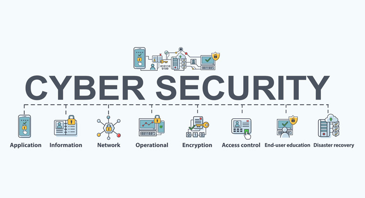
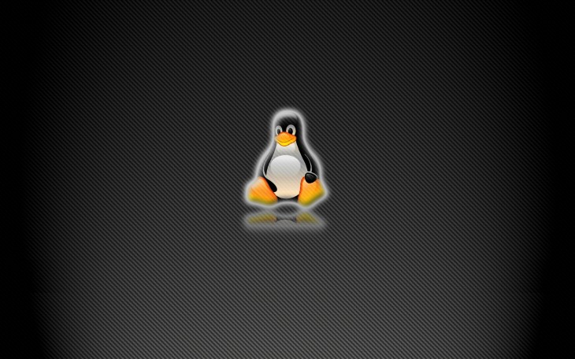
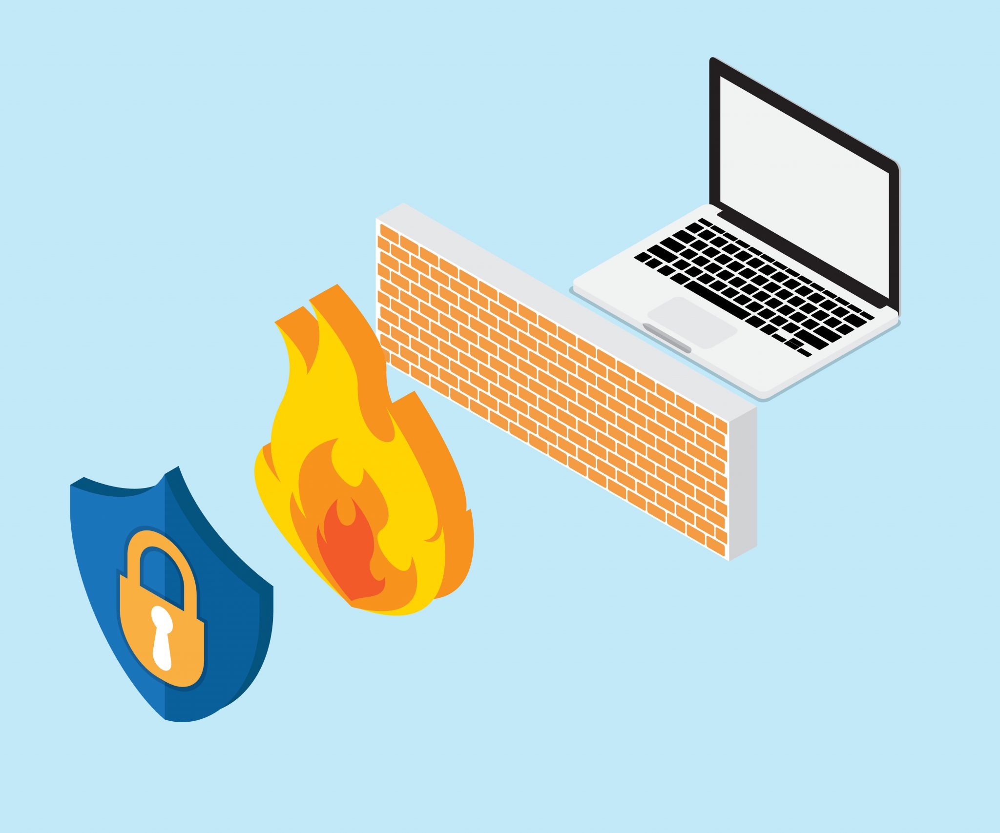

Mengapa Cyber Security itu Penting ?
Cyber security adalah teknologi, proses dan praktik yang dirancang untuk melindungi jaringan, komputer, program dan data dari serangan, kerusakan atau akses yang tidak sah. Cyber security juga disebut sebagai upaya untuk melindungi informasi dari adanya cyber attack. Cyber attack dalam operasi informasi adalah semua jenis tindakan yang sengaja dilakukan untuk mengganggu kerahasiaan (confidentiality), integritas (integrity), dan ketersedian (availability) informasi. Semua Perusahaan yang bertransformasi dari data berbasis digital sangat dianjurkan untuk memperhatikan dan menggunakan cyber security dalam menyimpan, mengakses dan mengambil informasi penting. Melindungi informasi dan data merupakan kebutuhan sebagian besar perusahaan dan instansi pemerintah di seluruh dunia karena data merupakan aset berharga dari suatu perusahaan dan bisa menjadi masalah di kemudian hari apabila data tersebut jatuh ke tangan orang yang tidak berhak.
Alasan Kenapa Kita Harus Menggunakan Linux
Seperti yang sudah sering kita ketahui bahwa sistem operasi untuk perangkat komputer yang paling banyak digunakan adalah Windows dan juga MacOS. Windows menjadi sangat umum digunakan oleh pengguna indonesia meskipun memiliki lisensi berbayar, namun Windows sangat rawan terhadap virus, malware atau ransomware dan banyak versi bajakan. Bahkan untuk melakukan update Windows juga sangat sulit kadang terdapat banyak kendala. Sedangkan untuk pengguna MacOS, ini sangat jarang sekali ada pengguna di indonesia karena memang sistem operasi MacOS harus sepaket dengan perangkat kerasnya (Komputer), dan itu sangatlah mahal. Alternatif yang bisa Anda gunakan agar terbebas dari virus komputer dan mudah ketika melakukan update OS adalah Linux. Selain terkenal sebagai sistem operasi yang aman dan stabil, Linux juga merupakan OS gratis dan terdapat banyak varian yang bisa Anda pilih. Anda sangat beruntung karena ada pilihan OS seperti Linux. Linux adalah sistem operasi open source yang muncul sejak akhir tahun sembilan puluhan dan ini bisa Anda jadikan pilihan terbaik untuk sistem operasi Anda. Tetapi mengapa Anda harus menggunakan linux? Berikut adalah beberapa alasan kenapa Anda perlu bermigrasi dari Windows ke alternatif yang lebih terbuka dan gratis seperti menggunakan Linux?
Popular Post
Bagaimana Cara Untuk Melindungi Data Pribadi Anda?

Berbagai aplikasi baik fintech, e-commerce, serta berbagai platform digital lainnya selalu memerlukan data pribadi pengguna. Apabila tidak berhati-hati, maka para penjahat digital dengan mudah akan menyalahgunakan data tersebut.
Seberapa Pentingnya Firewall?
Firewall. Mungkin Anda mengingatnya hanya sebagai salah satu opsi pengaturan di komputer. Lengkap dengan ikon bola dunia yang ditutupi tembok bata berwarna merah. Di balik ikon yang mudah diingat ini, ternyata firewall memiliki fungsi yang tak kalah penting.